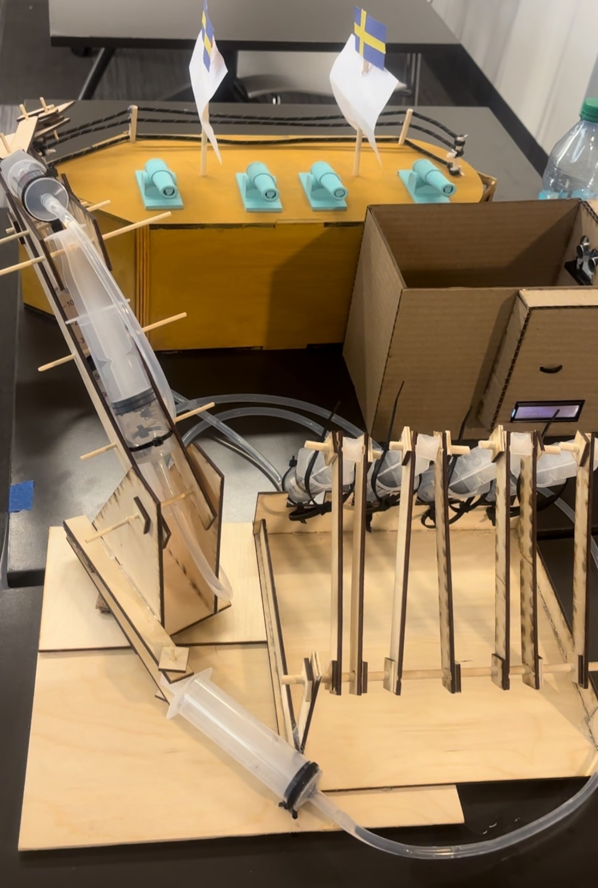
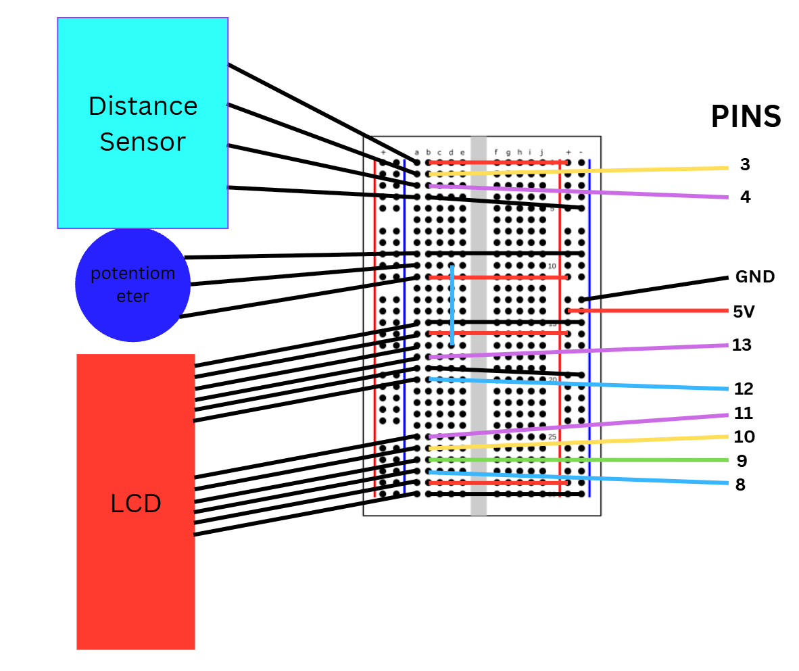
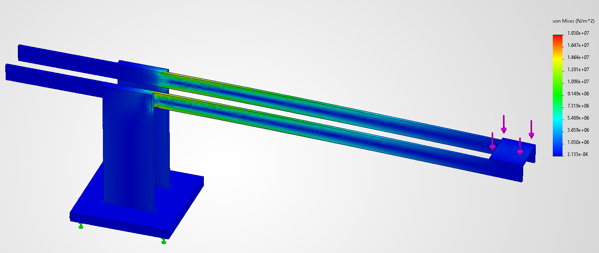

Case No. ZT-001 · Exhibit 02
Hydraulic Crane Carnival Game


Overview
Inspired by classic carnival arcade games, this hydraulic crane mixes hands-on engineering with interactive gameplay. Players work a manually controlled hydraulic mechanism to pick up and move 3D-printed objects, testing the crane’s strength and range of motion, and score points based on each object’s size and weight.
The project combines structural analysis, mechanical design and embedded electronics to create an engaging game experience.
How it works
-
Controls
Players move the crane in the x, y and z directions, and open and close the claw, using the pressure difference in the syringes.
-
Gameplay
Players pick up objects placed randomly on the ship and drop them into the score box.
-
Scoring
An ultrasonic sensor in the box tracks how long each item takes to pass by. Bigger items pass by for longer, so they score more.
-
Winning
The game ends when the built-in timer runs out or the player clears every item.
The crane

Fig. B: The hydraulic crane, my main part of the project.
Wiring


Fig. C: Breadboard wiring for the sensor, potentiometer and LCD.
I drew this diagram as a reference so the team could reconnect any wire that came loose during the showcase.
Key features
-
Syringe hydraulics
Used syringe-based hydraulics instead of motors to stay within the budget.
-
Structural optimization
Ran FEA in SolidWorks Simulation to evaluate stress, which led us to make the crane arms about 3 mm thicker.
-
Automated scoring
Integrated an Arduino and an ultrasonic sensor to detect successful plays and keep score.
Stress simulation


Fig. D: Von Mises stress in the crane hand under a 2.4 N load, from SolidWorks Simulation.
The test applies a theoretical 2.4 N of force, about what the crane feels when it picks up a phone. The highest stress (about 18 MPa) sits where the arm leaves the tower, while most of the part stays low. Based on this, we made the arms about 3 mm thicker to strengthen that area.